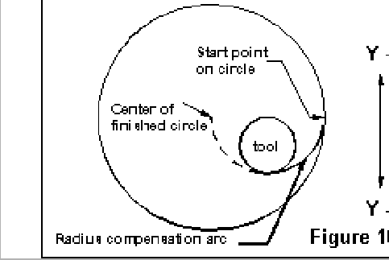

|
Inside milling with cutter compensation requires a little more complexity
on the approach and setup of the cutter compensation but the use of
variables works much the same way that it did in the four sided example
above.
For this example we want to drill an initial hole inside the circle and then change to the end mill and return to the hole and start the approach there. The first step is to list the steps that we need to take to complete this task.
|
|

|
For the initial test of this program, the relevant portion of the variable file looked like those lines below.
The emc.var file addition for pocket milling of a circle
Coordinate system to use is variable 1100.
1100 56
Drill pocket number in variable 1101 below.
1101 1
Mill pocket number in variable 1102 below.
1102 2
Finished Hole Diameter in variable 1103 below.
1103 2.5000
End Mill Diameter in variable 1104 below.
1104 0.5000
By using variables we are able to easily adjust the size of the hole that will be cut and the size of the cutter. By making the tool slots also variables, the code can be used over and over in the same program with different combinations. Editing sizes is relatively easy for the operator during final setup and run because the variables are explicit. One caution here is that both #1104 and the size of the tool defined in the emc.tbl need to be about the same size.
Example 4 uses one half of the radius of the finished circle as the radius of the tool approach for tool diameter compensation. (see figure 11) The edge of the tool is placed on this arc before the compensation move is begun. For large circles this approach may waste some time getting from the initial location to the start of the circle cut. A change in the approach point arithmetic expression could move the approach point closer to the edge of the circle.
Pocket milling of a circle
N010 (Var #1100 is coordinate system number)
N020 (Var #1101 is drill tool slot)
N030 (Var #1102 is mill tool slot)
N040 (Var #1103 is hole diameter)
N050 (Var #1104 is tool diameter)
N060 G#1100 G0 X0 Y0 Z0 (machine home from
previous work)
N070 (place your tool load routine about here)
N080 G55 T#1000 M6 G43 H#1000 (pick up drill
and offsets for this hole)
N090 X[#1002/4] Y[-1*[[#1002/4]-[#1003/2]]]
Z0 (move to initial position)
N100 G1 F5 Z-1 (drill starting hole)
N110 F25 Z0 (retract quill)
N110 G53 G0 X0 Y0 Z0 (go back to tool change
position)
N130 (place your tool load routine about here)
N140 T#1001 M6 G43 H#1001 (pick up mill)
N150 X[#1002/4] Y[-1*[[#1002/4]-[#1003/2]]]
Z0 (mill to initial position)
N160 G1 F5 Z-1 (mill starting hole)
N170 G17 G41 D2 G3 F3 X[#1002/2] Y0 R[#1002/4]
(offset arc to start)
N180 X[-1*[#1002/2]] R[#1002/2]
(cut the first half circle)
N190 X[#1002/2] R[#1002/2] (cut the
second half circle)
N200 G40 T0 M6 G43 H0 G0 Z0 (drop offsets and
retract quill)
N210 G53 G0 X0 Y0 Z0 (go home)
N220 M2
One limitation of the code above is that tool diameter can't be larger than the radius (d/2) of the finished hole or the EMC will generate a cutting compensation error message.